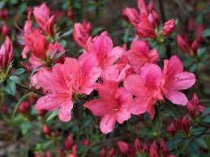

|  | |
Often referred to as "the royalty of the garden," these elegant flowers are known for their outstanding colors and foliage. With thousands of varieties to choose from, Azaleas require little maintenance once planted and can be brought inside to make a fabulous bouquet. |

| |
Bring the tropics to our garden with a Balsam plant. Easy to care for, it thrives in shadier spots, can tolerate heat and handle damp soil. Flowers come in almost every color of the rainbow, including red, orange, yellow, violet, white and pink. |